Imad Serhal · Mechanical · Control Systems · Industrial Automation
Projects
Mechanical design, control systems and industrial automation, plus a few embedded and robotics projects. Pick a discipline or a card to jump in; each project states the problem, what I did and the result.
Engine testing from my bachelor’s final year project, and building-services engineering from my first role.
Mechanical Design Engineer · My Projects SAL, Lebanon · 2021–2022
HVAC and hydronic system design
I prepared shop drawings and sized compressors, pumps and circulation pumps for residential and high-rise building services.
Scope
Task
Method and inputs
Hydronic
Pump sizing
Pump head from segment-by-segment friction loss (pipe diameter, flow, velocity), fittings as equivalent lengths, plus equipment pressure drops
Hydronic
Circulation pumps
Heat loss through insulated hot-water supply and return pipes, then circulation flow from Q = ṁ·cp·ΔT
Ventilation
Fan sizing
Required static pressure from duct friction per segment (Pa/m × length at the design flow and velocity), plus dampers, grilles and louvres, with a 1.1 safety factor
Ventilation
Duct take-off
Galvanised sheet area and weight per duct size, grouped by sheet-metal gauge
Refrigerant
Compressor sizing
VRV outdoor compressor units and matching indoor units, refnet branch kits and refrigerant pipe lengths, selected in Daikin VRV Xpress
Drawings
Shop drawings
AutoCAD shop drawings for HVAC layouts, copper refrigerant piping, water supply with hot-water return, drainage and heating-water valves, used for installation on site
Worked examples from my calculation sheets · residential project
Sheet
Inputs
Result
Toilet exhaust fan
270 m³/h trunk, 2 duct sections
58 Pa static pressure (10 Pa duct, 42 Pa fittings, ×1.1)
Balcony fan 5
486 m³/h, 3 duct sections
78 Pa static pressure
Balcony fan 6
630 m³/h, 5 duct sections
106 Pa static pressure
Fresh-air handling unit
486 m³/h, 3 duct sections
75 Pa external static pressure
Fresh-air ductwork
Duct sizes and run lengths
38.6 m² of G90 galvanised sheet, about 216 kg
Hot-water circulation pump
42 m supply and 34 m return PPR pipe with ThermoBreak insulation
514 W total heat loss, which sets the circulation flow through Q = ṁ·cp·ΔT
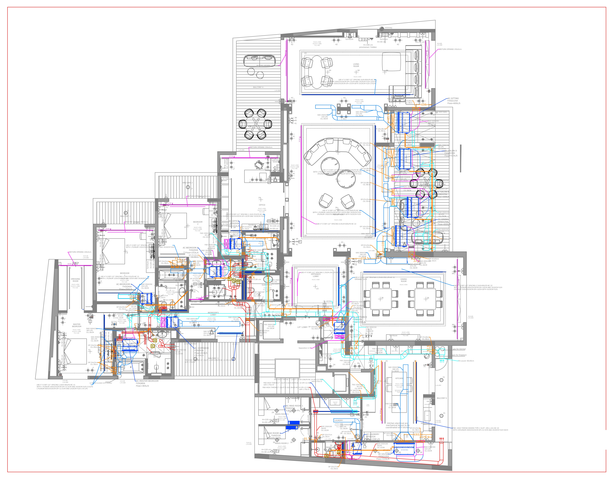
HVAC layout of a residential apartment: concealed ducted VRV indoor units (Daikin FXSQ) with supply, return and fresh-air ductwork, each diffuser and grille sized and labelled in L/s, condensate drains and builder's-work openings. Zoom in for the unit and duct details.
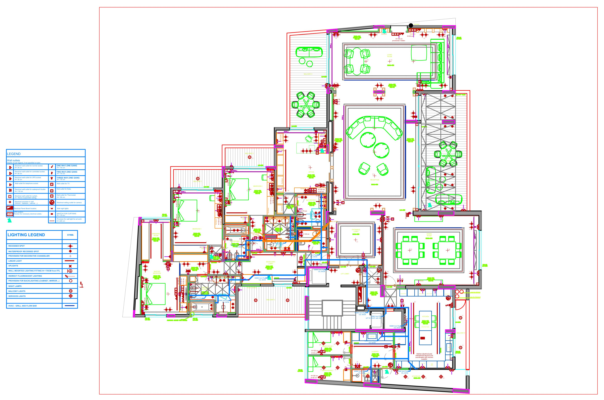
Drainage pipe layout on a coordinated MEP plan of a residential apartment: 110 mm soundproof soil and waste pipes at 1% slope, 50 mm vent pipes and a 75 mm vent stack up to the roof. Click the drawing to zoom in.
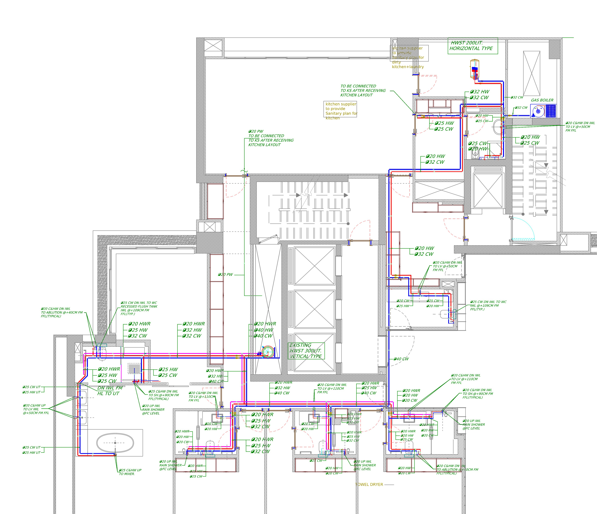
Water-supply plan of a residential apartment: cold water, hot water and hot-water return (Ø20–40 mm) from the gas boiler and 200 L / 300 L storage tanks to each bathroom, kitchen and laundry, with drop heights for every fixture.
AutoCAD
Excel calculation sheets
Duct static pressure
Daikin VRV Xpress
Fluid mechanics
Heat transfer
B.Eng. final year project · Beirut Arab University · 2021
Ethanol–diesel dual-fuel engine study
Can blending ethanol into diesel cut emissions without giving up too much engine performance? I tested ethanol–diesel blends on a single-cylinder engine test bed, then extended the study with engine simulation.
E0–E30blends tested, 10% steps
4 loadsper blend on the dynamometer
377 ccsingle cylinder, CR 19, 7.6 kW
λ 1.5–5simulated lambda sweep
Setup
Cussons P8160 test bed with a Ruggerini RM80 water-cooled diesel engine and a DC dynamometer. Fuel flow was measured by burette, plus air flow and exhaust temperatures.
What I did
Ran diesel and 10, 20 and 30% ethanol blends at four loads.
Built the calculation sheet for brake power, BSFC, brake thermal efficiency, air–fuel ratio, volumetric efficiency and λ.
Modelled the engine in Diesel-RK, checked it against the test data, then swept inlet pressure (1–2 bar), inlet temperature and λ.
Result
Ethanol lowered brake power slightly and raised fuel consumption, within an acceptable margin, while CO2 and NOx emissions fell. Brake thermal efficiency improved up to about E10, with no further gain beyond it.
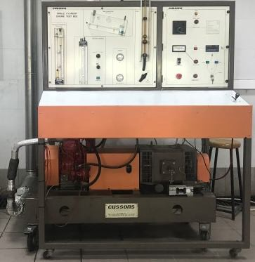
The Cussons P8160 single-cylinder test bed used for the blend tests, Beirut Arab University mechanical lab.
Engine test bed
Dynamometer
Diesel-RK
Excel
Thermodynamics
Combustion & emissions
Discipline 2 of 3
Control Systems
Model-based control in MATLAB/Simulink, from electric-machine drives to unstable mechanical systems.
M.Sc. thesis · University of Padova · heavy-duty IVECO application · 2024
Control of an electrically excited synchronous motor for a heavy-duty EV
A complete control architecture for an EESM traction motor that holds stable speed and torque tracking across the full torque–speed envelope while respecting inverter voltage and current limits.
−10%simulated Joule losses with ESC
700 N·mload step at 1000 rad/s
430 N·mload step at 3000 rad/s
3 loopsspeed, stator current, excitation
Problem
EESMs avoid permanent magnets, but magnetic saturation, cross-coupling and the inverter voltage limit at high speed make them hard to control over a wide operating range.
What I did
Built linear and nonlinear d-q models from flux and torque maps.
Tuned cascaded PI loops with anti-windup by loop shaping.
Generated MTPA and MTPV trajectories as lookup tables.
Wrote the switching logic between MTPA, flux weakening and MTPV.
Applied Extremum Seeking Control to the excitation current.
Result
Stable speed and current tracking at several speed and load points, including load steps and deliberate modelling errors. ESC reduced simulated Joule losses by up to 10%.
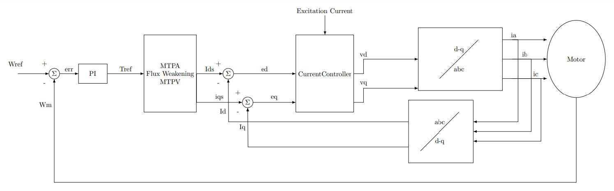
Control architecture: outer speed loop, operating-region block, inner d-q and excitation current loops.
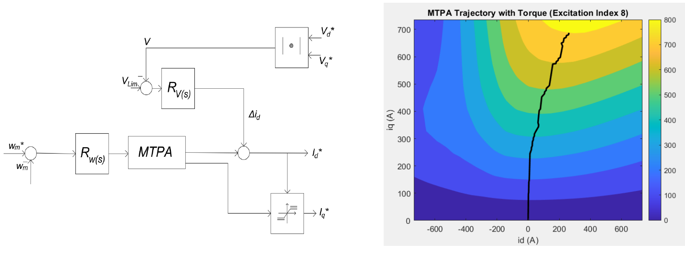
MTPA / flux-weakening block and the MTPA trajectory on the torque map (id, iq in A).
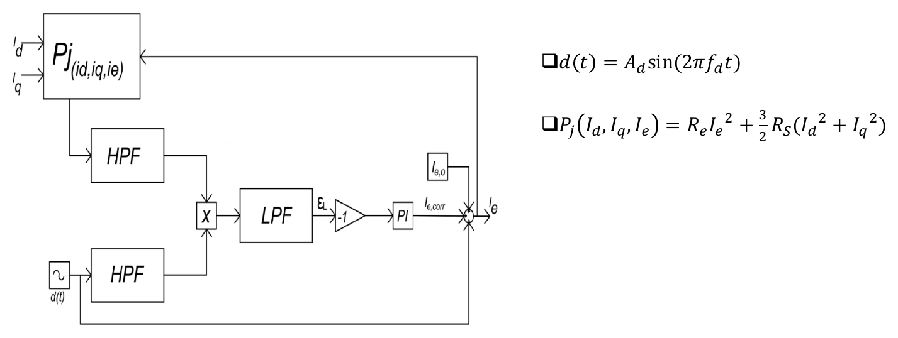
Extremum Seeking Control on the excitation current, minimising Pj = ReIe² + 3/2·Rs(Id² + Iq²).
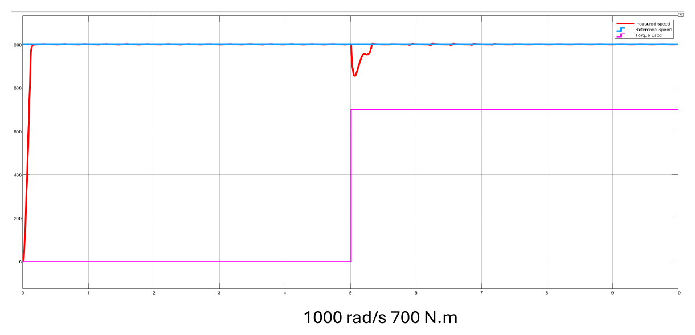
Speed tracking at 1000 rad/s with a 700 N·m load step.
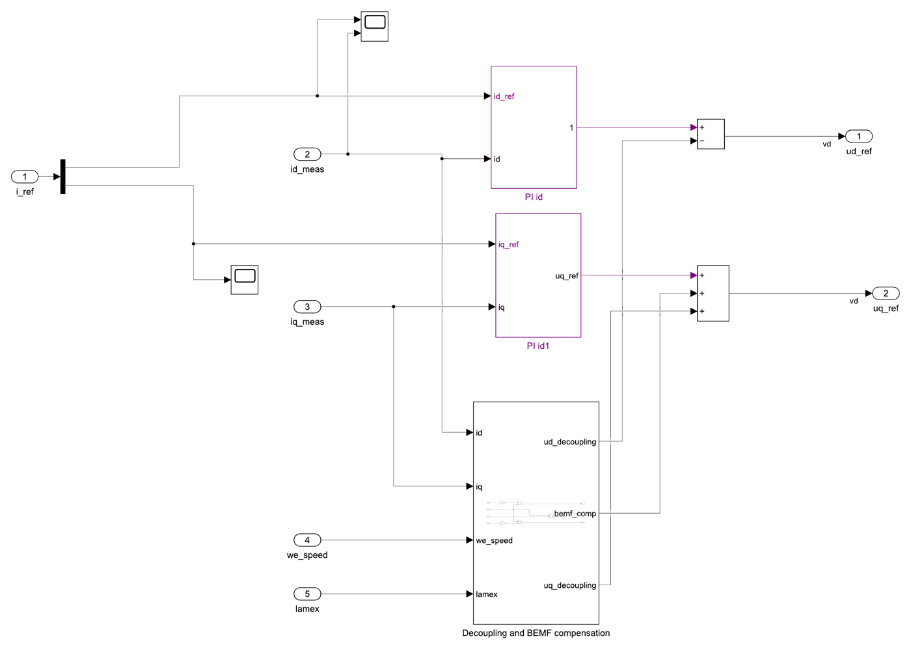
Simulink current-control subsystem: d-q PI loops with decoupling and back-EMF compensation (nonlinear model).
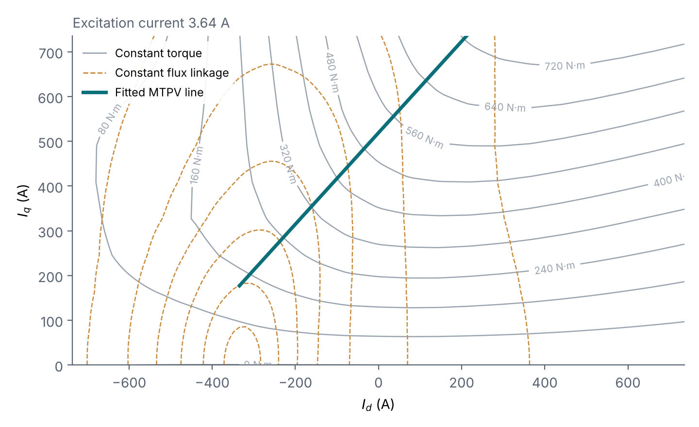
MTPV trajectory fitted on the motor maps at 3.64 A excitation, replotted from the MATLAB figure.
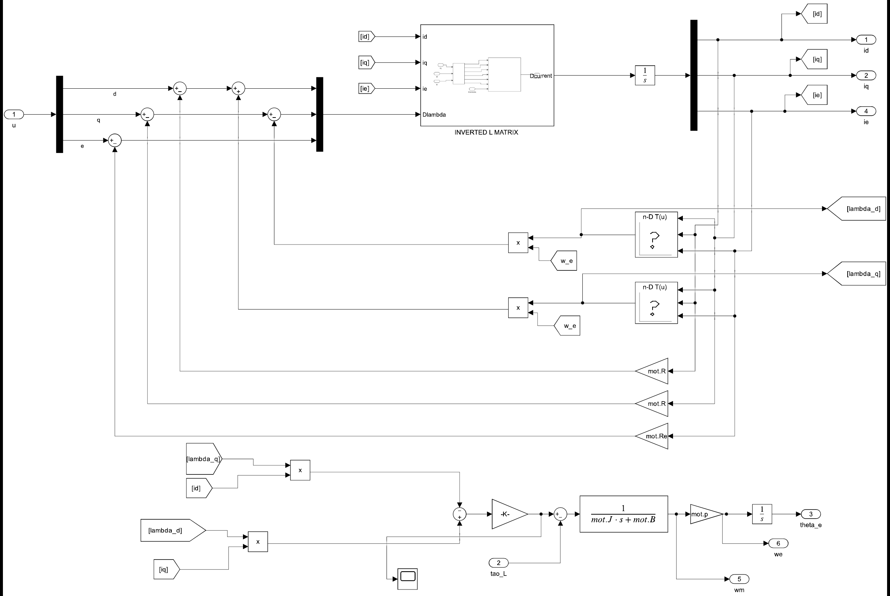
Nonlinear EESM model: d, q and excitation voltage equations solved through the inverted inductance matrix, flux linkages from lookup maps of id, iq and ie, and the mechanical model with load torque.
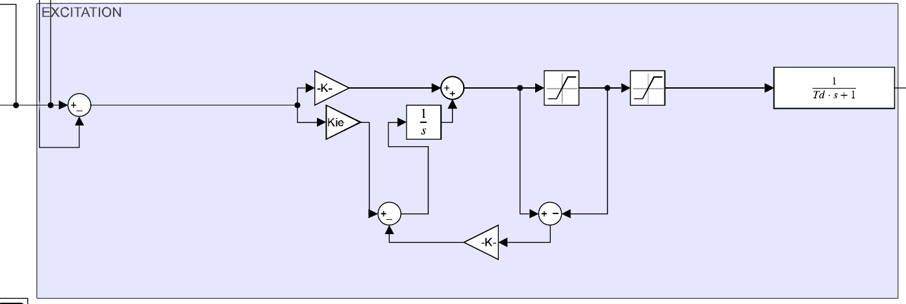
Excitation current loop: PI controller with anti-windup back-calculation and voltage saturation, followed by the first-order delay 1/(Td·s + 1).
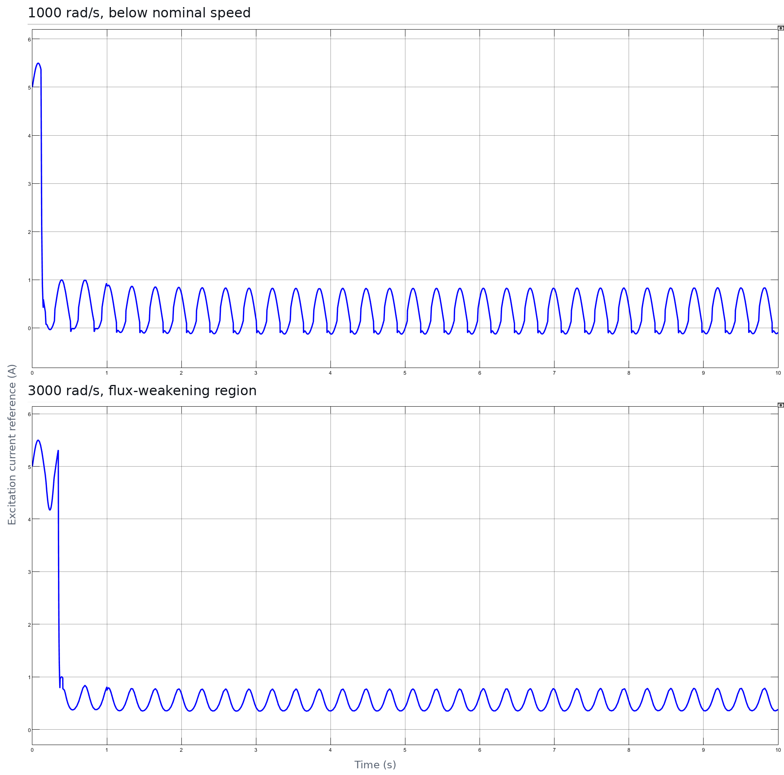
ESC results: the excitation current reference leaves its 5 A starting point and settles into a small dither around the loss-minimising value, below nominal speed (top) and in flux weakening (bottom).
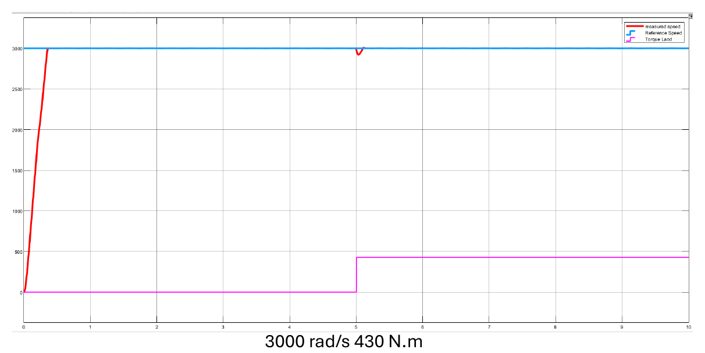
Speed tracking at 3000 rad/s, in flux weakening, with a 430 N·m load step at 5 s.
MATLAB
Simulink
FOC
MTPA / MTPV
Flux weakening
Lookup tables
Extremum Seeking Control
Operating-region selection: MTPA, flux weakening, MTPVSimulink MATLAB Function block · nonlinear model
function [Id, Iq] = fcn(IdFW, IdMTPA, IqMTPA, we, weRef, Tref, IdMTPV, IqMTPV, I)
Ld = 0.31e-3;
Lq = 0.15e-3;
lamex = 38.4e-3 * 3.8;
P = 6;
scaling_factor = Tref / 1177;
if I > 736
if we >= 1894
if we <= 0.999 * weRef
Id = IdMTPA + IdFW;
Iq = sqrt(736^2 - Id^2) * scaling_factor;
else
Id = IdFW;
Iq = Tref / (9 * ((Ld - Lq) * IdMTPA + lamex));
end
else
Id = IdMTPA;
Iq = IqMTPA;
end
else
Id = IdMTPV * abs(scaling_factor);
Iq = IqMTPV * scaling_factor;
end
end
PI tuning by loop shapingcontroller.m · MATLAB · excerpt
% Plants seen by each PI loop (half switching period as converter delay)
Pd = (1/(1 + s*Td)) * (1/(R + s*Ld)); % d-axis current
Pq = (1/(1 + s*Td)) * (1/(R + s*Lq)); % q-axis current
Pe = (1/(1 + s*Td)) * (1/(Re + s*Le)); % excitation current
P_speed = P_current * (6/(J*s + B)) * torque; % speed, inner loop closed
% Target crossover and phase margin per loop (bandwidth separation)
wgc_d = 3000; phasemrgn_d = 70*deg2rad;
wgc_q = 3000; phasemrgn_q = 70*deg2rad;
wgc_excitation = 1000; phasemrgn_excitation = 75*deg2rad;
wgc_speed = 500; phasemrgn_speed = 60*deg2rad;
[Kpd, Kid] = pid_bode(Pd, wgc_d, phasemrgn_d); % Kp = 0.9688, Ki = 197.73
[Kpq, Kiq] = pid_bode(Pq, wgc_q, phasemrgn_q); % Kp = 0.4685, Ki = 111.17
[Kpe, Kie] = pid_bode(Pe, wgc_excitation, phasemrgn_excitation);
[Kpv, Kiv] = pid_bode(P_speed, wgc_speed, phasemrgn_speed);
function [Kp, Ki, Tpi] = pid_bode(P1, wgc, phasemrgn)
% PI gains that put the crossover at wgc with the requested phase margin
Pcmplx = evalfr(P1, 1i*wgc);
Tpi = tan(-pi + phasemrgn - angle(Pcmplx) + pi/2) / wgc;
Ki = (1/abs(Pcmplx)) * (wgc / sqrt(1 + (wgc*Tpi)^2));
Kp = Ki * Tpi;
end
MTPA trajectory search on the torque mapmtpa_traje.m · MATLAB · excerpt
% For each current amplitude, sweep the current angle and keep the (id, iq)
% pair that gives the most torque on the interpolated flux-map torque data.
for i = 1:100
I_peak = torque_mtpa(i);
max_torque_i = -Inf;
for angle = linspace(0, pi/2, 100)
id = I_peak * cos(angle);
iq = I_peak * sin(angle);
torque = interp2(fine_Id_values, fine_Iq_values, Fine_Torque, id, iq, 'linear');
if torque > max_torque_i
max_torque_i = torque;
best_id = id;
best_iq = iq;
end
end
id_mtpa(i, excitation_index) = best_id; % stored as lookup tables,
iq_mtpa(i, excitation_index) = best_iq; % one column per excitation level
end
M.Sc. laboratory series · University of Padova · Quanser SRV02 hardware
Control laboratory: from DC servo to balancing robot
Five labs on real laboratory hardware, each adding a control technique: physical modelling, robust and digital control, observers, LQR with parameter identification, and finally an unstable two-wheeled balancing robot.
Nominal and robust state-space control, PID with anti-windup, feedforward
Lab 2
Servo position, digital
Exact, Tustin and Euler discretisation, direct digital design, state observers
Lab 3
Servo with resonant two-mass load
Least-squares identification, PID, pole placement, LQR, anti-windup
Lab 4
Two-wheeled balancing robot
Discrete LQR with integral action, complementary tilt filter, yaw control
The lab supplied the plants and hardware interface blocks. Every controller was designed and tuned in MATLAB/Simulink, then tested on the real servo.
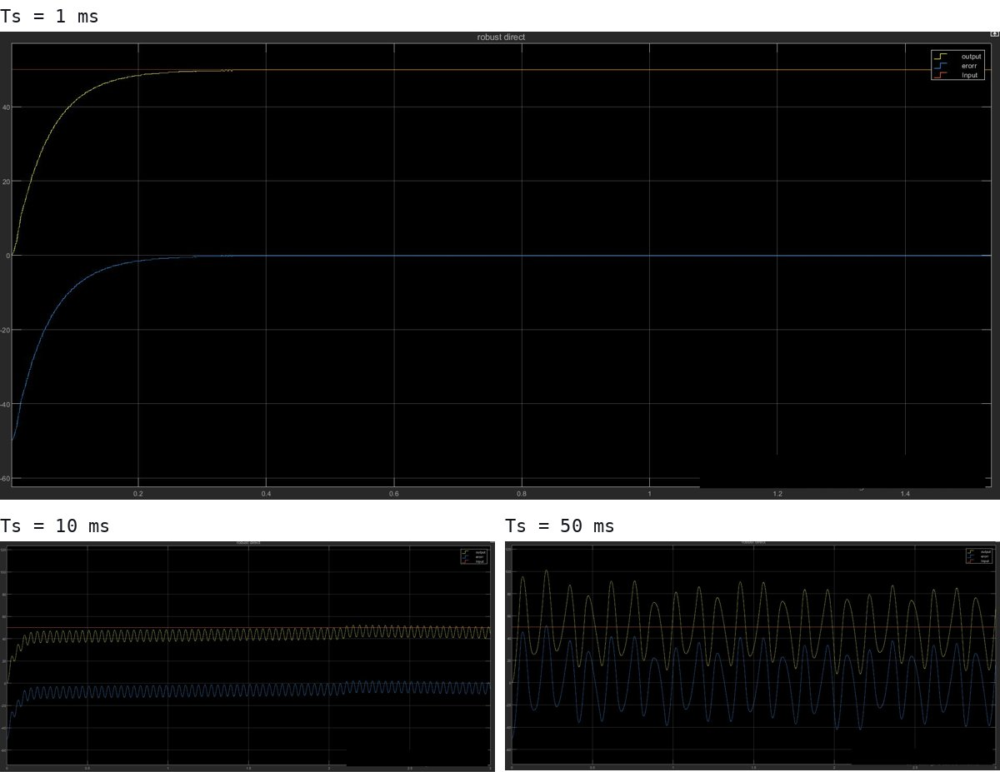
Lab 2, real hardware: robust direct-digital state-space controller tracking a 50° step (output, error, reference). The same design settles cleanly at 1 ms sampling and loses stability as the sampling time grows.
Lab 2 highlight · digital position control
Emulation vs direct digital design
A continuous PID controller was discretised four ways and a state-space controller was designed both by emulation and directly in discrete time, each run in simulation and on the servo.
Real time, Ts = 1 ms
ts,5%
Overshoot
PID, backward Euler
0.175 s
36%
PID, Tustin
0.16 s
36%
PID, exact
0.175 s
34%
State-space, emulation
0.164 s
0%
Robust SS, direct digital
0.17 s
0%
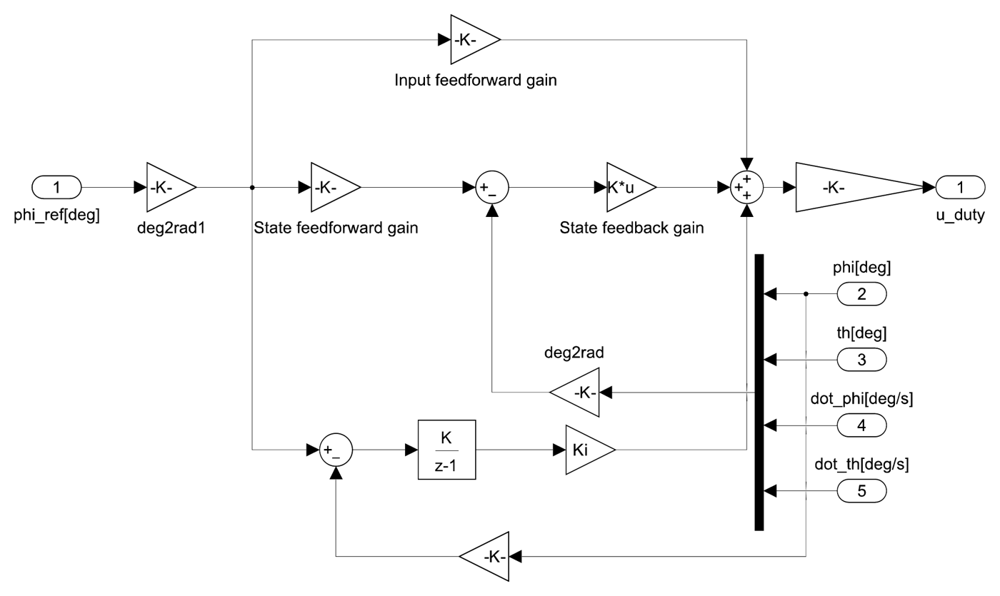
Lab 4, balancing robot: discrete state-feedback controller with integral action and reference feedforward.
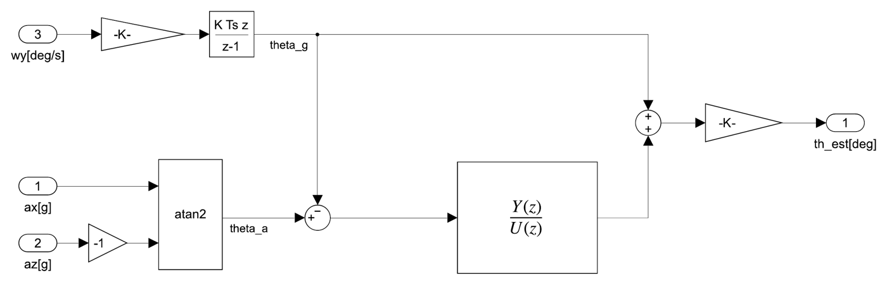
Lab 4: complementary filter fusing gyroscope rate and accelerometer tilt into one angle estimate.
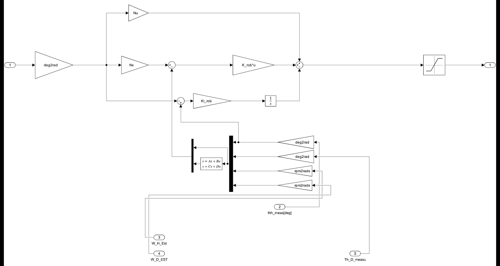
Lab 3, resonant load: robust state-space controller with integral action, feedforward (Nx, Nu) and actuator saturation.
MATLAB
Simulink
State-space
LQR
Observers
Robust control
Discretisation
System identification
Balancing robot: discrete LQR with integral actionRobust_SS_Matlabcode.m · MATLAB · excerpt
% Linearised robot model: M q'' + Fv q' + G q = B u
A = [zeros(2,2), eye(2,2);
-inv(M)*G, -inv(M)*Fv1];
B = [zeros(2,2); inv(M)] * [1; -1] * 2*gbox.N*mot.Kt/mot.R;
C = [1, 0, 0, 0];
% Zero-order-hold discretisation, then augment with an integrator on the output
discPlant = c2d(ss(A, B, C, 0), Ts, 'zoh');
[Ad, Bd, Cd, Dd] = ssdata(discPlant);
phiE = [1 Cd; zeros(4,1) Ad];
sigE = [0; Bd];
% Bryson's rule: weights from the largest acceptable deviations
phi_bar = pi/36;
theta_bar = pi/360;
u_bar = 1;
Q = diag([0.1, 1/phi_bar^2, 1/theta_bar^2, 0, 0]);
r = 1/u_bar^2;
rho = 5000;
K = dlqr(phiE, sigE, Q, r*rho);
Ki = K(1); % integral gain
K_rob = K(2:5); % state-feedback gains
% Third-order complementary filter for tilt-angle estimation
s = (tf('z', Ts) - 1)/Ts;
Hz = (3*Tc^2*s^2 + 3*Tc*s + 1) / (Tc*s + 1)^3;
Discipline 3 of 3
Industrial Automation
Siemens TIA Portal V15 programs tested against Factory I/O plant models through S7-PLCSIM, a virtual-commissioning workflow, plus an in-house Python tool that automates test-data analysis and reporting. The demo videos play silently.
Factory I/O · no audio
PLC project · TIA Portal V15 · Factory I/O
Conveyor sorting by height
A conveyor cell that detects each workpiece's height with sensors and routes it to the correct outfeed line. The PLC coordinates conveyors, sensors and diverters and handles operator start and stop from a control panel.
Siemens S7
TIA Portal V15
S7-PLCSIM
Factory I/O
Sensor / actuator I/O
Factory I/O · no audio
PLC project · TIA Portal V15 · Factory I/O
Multi-level elevator control
Sequential control of a freight elevator. The program handles floor requests, position sensing and direction interlocks, and hands loads to the conveyor at each level.
Sequential logic
Interlocks
TIA Portal V15
S7-PLCSIM
Factory I/O
Factory I/O · no audio
PLC project · TIA Portal V15 · Factory I/O
Tank water-level control
A process-control cell with a level transmitter, fill and discharge valves, a flow meter and an operator panel. The PLC reads the level and drives the valves to keep the tank within its operating band.
Process control
Analog level input
Valve control
TIA Portal V15
Factory I/O
Industrial tool · Python desktop application
Test-data analysis and report generator
Writing a test report used to mean exporting logger data, cleaning it in spreadsheets, building plots by hand and pasting everything into a Word template. I built a desktop application that does the whole chain in one place: it reads data-logger and CAN-bus logs, lets the engineer clean and analyse the signals interactively, and generates a complete, numbered Word report from a template in one click.
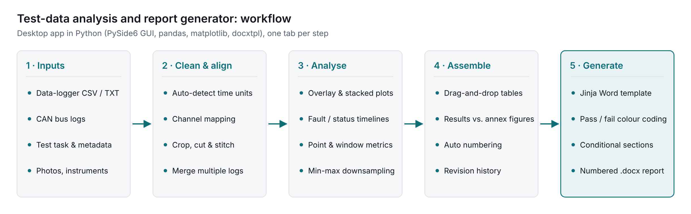
Workflow of the application. Each step is a tab in the GUI.
Area
What it does
Data import
Reads multi-channel data-logger exports (CSV/TXT) and CAN-bus logs, merges several logs, maps channels to physical quantities and auto-detects time units (µs to hours, or timestamps).
Signal analysis
Interactive matplotlib plots embedded in the GUI: range slider, crop, cut-and-stitch of idle periods, overlays across logs, stacked fault and status timelines, and click-to-save point metrics.
Performance
Block-wise min/max downsampling keeps traces of millions of samples responsive without hiding peaks.
Report assembly
Drag-and-drop results tables with merged cells and colour fills, routing of figures to results or annexes, automatic table and figure numbering, revision history.
Report generation
Fills a Jinja/docxtpl Word template: header fields, instrument and setup tables, pass/fail colour coding, conditional analysis sections, embedded photos and plots.
Integration
Pulls test-request details from the team's project-management tool through its REST API, and ships as a standalone Windows executable (PyInstaller).
CAN frame decoding uses an existing in-house library. Company data, templates and product-specific signal definitions are not shown.
Python
PySide6 (Qt)
pandas
NumPy
matplotlib
docxtpl / python-docx
REST API
PyInstaller
Min-max downsampling for long tracesPython · NumPy
def min_max_downsample(t, y, max_points=30000):
"""Reduce a long trace for plotting while keeping every peak and dip:
split it into blocks and keep the min and max sample of each block."""
if len(t) <= max_points: return t, y
try:
num_blocks = max_points // 2
block_size = len(t) // num_blocks
if block_size <= 1: return t, y
trunc_len = block_size * num_blocks
t_trunc = t[:trunc_len].reshape((num_blocks, block_size))
y_trunc = y[:trunc_len].reshape((num_blocks, block_size))
y_safe = np.nan_to_num(y_trunc, nan=0.0)
min_idx = np.argmin(y_safe, axis=1)
max_idx = np.argmax(y_safe, axis=1)
row_idx = np.arange(num_blocks)
t_min, y_min = t_trunc[row_idx, min_idx], y_trunc[row_idx, min_idx]
t_max, y_max = t_trunc[row_idx, max_idx], y_trunc[row_idx, max_idx]
t_comb = np.concatenate([t_min, t_max])
y_comb = np.concatenate([y_min, y_max])
sort_order = np.argsort(t_comb)
return t_comb[sort_order], y_comb[sort_order]
except Exception:
step = max(1, len(t) // max_points)
return t[::step], y[::step]
Time-axis parser for logger exportsPython · pandas
def process_time_column(df):
"""Convert the first column of a logger export to seconds, whatever
its format: a unit in the header, a unit in the cells, or timestamps."""
col_name = str(df.columns[0]).strip()
unit_match = re.search(r'[\[\(](us|µs|ms|s|sec|min|m|h|hr)[\]\)]', col_name, re.IGNORECASE)
scale_factor = 1.0
if unit_match:
unit = unit_match.group(1).lower()
if unit in ['us', 'µs']: scale_factor = 1e-6
elif unit == 'ms': scale_factor = 1e-3
elif unit in ['s', 'sec']: scale_factor = 1.0
elif unit in ['min', 'm']: scale_factor = 60.0
elif unit in ['h', 'hr']: scale_factor = 3600.0
raw_series = df[df.columns[0]].astype(str).str.strip()
first_cell = raw_series.dropna().iloc[0] if not raw_series.dropna().empty else ""
cell_match = re.search(r'([a-zA-Zµ]+)$', first_cell)
if cell_match and not unit_match:
inline_unit = cell_match.group(1).lower()
if inline_unit == 'ms': scale_factor = 1e-3
elif inline_unit in ['min', 'm']: scale_factor = 60.0
raw_series = raw_series.str.replace(r'[a-zA-Zµ]+$', '', regex=True)
try:
return pd.to_numeric(raw_series).to_numpy() * scale_factor
except (ValueError, TypeError):
pass
try:
t_dt = pd.to_datetime(raw_series, format='mixed', dayfirst=True)
return (t_dt - t_dt.iloc[0]).dt.total_seconds().to_numpy()
except Exception:
return np.arange(len(df), dtype=float)
Other projects
Embedded & Robotics
Firmware, sensor fusion and perception for small mobile robots.
University project · Arduino Mega
GPS waypoint-navigation robot
A small ground robot that drives itself to a list of GPS waypoints, using a calibrated magnetometer for heading and Bluetooth for commands.
What I did
Integrated an MPU9255 / AK8963 magnetometer for heading and wrote separate calibration and heading-test sketches.
Wrote the bearing and Haversine distance functions used for guidance.
Drove the motors through direct PWM pin control of the motor driver.
Integrated GPS, Bluetooth, ultrasonic sensing and motor commands with serial debugging.
How it navigates
The robot computes the bearing to the active waypoint and compares it with its heading. Within ±15° it drives forward, otherwise it turns the shorter way. Within 1 m it stops and moves to the next waypoint.
Hardware represented in the firmware.
Field test · no audio
Outdoor field test, with commands sent from a phone over Bluetooth.
C / C++
Arduino Mega
TinyGPS++
MPU9255
Bluetooth serial
Sensor calibration
Bearing and Haversine distance to a waypointGPS_compass.ino · C++
float bearing(double latA, double lonA, double latB, double lonB)
{
latA = latA * PI / 180.0;
lonA = lonA * PI / 180.0;
latB = latB * PI / 180.0;
lonB = lonB * PI / 180.0;
float deltaLon = lonB - lonA;
float X = cos(latB) * sin(deltaLon);
float Y = cos(latA) * sin(latB) - sin(latA) * cos(latB) * cos(deltaLon);
float bearingDegrees = atan2(X, Y) * 180 / PI;
if (bearingDegrees < 0) {
bearingDegrees += 360.0;
}
return bearingDegrees;
}
float calculateDistance(long double latA, long double lonA, long double latB, long double lonB) {
latA = latA * PI / 180.0;
lonA = lonA * PI / 180.0;
latB = latB * PI / 180.0;
lonB = lonB * PI / 180.0;
long double deltaLat = latB - latA;
long double deltaLon = lonB - lonA;
// Haversine formula
long double a = sin(deltaLat / 2) * sin(deltaLat / 2)
+ cos(latA) * cos(latB) * sin(deltaLon / 2) * sin(deltaLon / 2);
long double c = 2 * atan2(sqrt(a), sqrt(1 - a));
return 6371000 * c; // metres
}
Hard-iron magnetometer calibrationmagnetometer_calibration.ino · C++ · excerpt
const int numSamples = 1500;
float magMin[3] = { 0.0, 0.0, 0.0 };
float magMax[3] = { 0.0, 0.0, 0.0 };
float magOffsets[3] = { 0.0, 0.0, 0.0 };
float f_magCount[3];
void calibrateMagnetometerOffsets() {
// Rotate the robot through all orientations while sampling
for (int i = 0; i < numSamples; i++) {
mpu.readMagData(f_magCount);
for (int j = 0; j < 3; j++) {
if (f_magCount[j] < magMin[j]) magMin[j] = f_magCount[j];
if (f_magCount[j] > magMax[j]) magMax[j] = f_magCount[j];
}
delay(10);
}
// Hard-iron offset is the centre of the measured range on each axis
for (int i = 0; i < 3; i++) {
magOffsets[i] = (magMin[i] + magMax[i]) / 2.0;
}
}
M.Sc. course · University of Padova · Embedded Real-Time Control · 2023
Embedded real-time control on a TurtleBot (STM32)
Bare-metal firmware on an STM32 board, built up lab by lab: timers and PWM, sensor fusion, closed-loop wheel speed control and finally an autonomous line follower. Everything was written in C with the STM32 HAL and logged to MATLAB over serial.
Lab
System
What I built
Lab 2
Pan-tilt camera mount, BNO055 IMU
50 Hz servo PWM from timer setup, tilt from the accelerometer, yaw from gyro integration, Kalman filter fusion
Lab 3
Wheel motors, quadrature encoders, DRV8871
4x encoder speed measurement at 10 ms, PI speed control to 120 rpm, anti-windup, forward-brake vs forward-coast drive, keypad reference over I²C
Lab 4
TurtleBot with 8-channel line sensor
Weighted line-position error, differential wheel speed references, adaptive speed on straights and curves, noise rejection on a degraded track
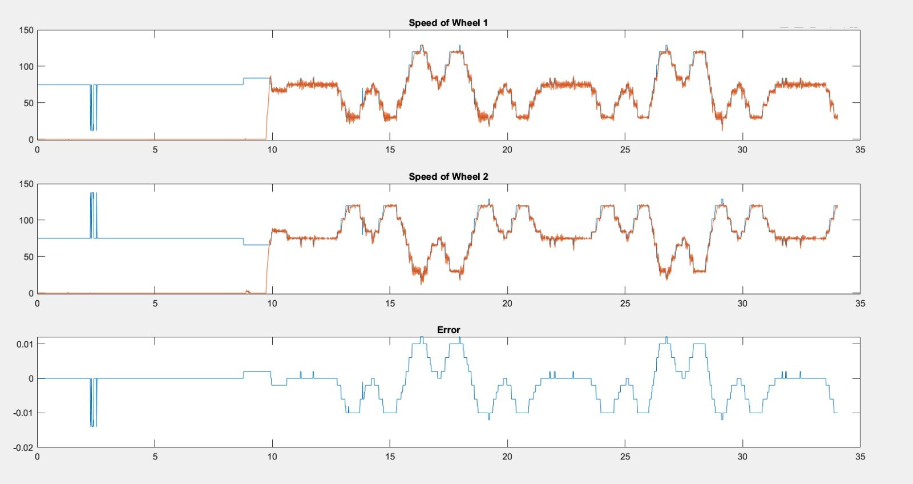
Lab 4, on the robot: both wheel speeds tracking their references (blue reference, orange measured, rpm) as the line-position error (m) changes through the curves.
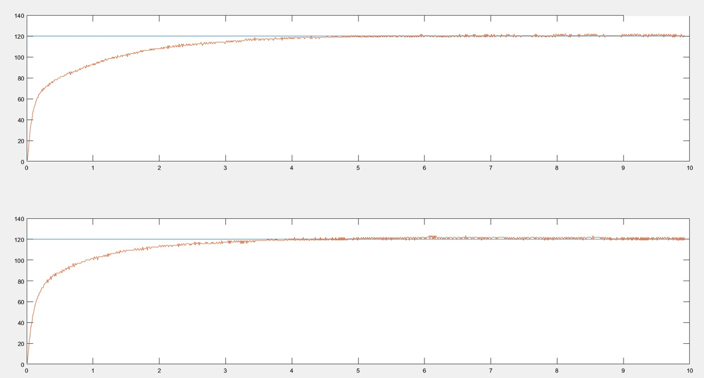
Lab 3: PI speed loop (Kp = 4, Ki = 1) bringing both wheels to the 120 rpm reference.
Speed loop
Encoder counts are differenced every 10 ms, with wrap-around handled in both directions, and converted to rpm. The PI output is a motor voltage, saturated at ±7.9 V and mapped to a 250 Hz PWM duty cycle.
Line following
Each of the 8 sensors is weighted by its distance from the centre. The averaged error shifts the two wheel speed references in opposite directions, with a gain tuned between 85 and 90. On the hard track, readings with five or more sensors active, or none, are treated as noise.
C
STM32 HAL
Timers / PWM / encoders
I²C
BNO055 IMU
Kalman filter
MATLAB serial logging
PI speed control with anti-windupLab 3 · C · excerpt
TrackingError = refSignal - SPEED;
proportionalTerm = Kp * TrackingError;
uIntegral = uIntegral + Ki * TS * TrackingError - Kw * (u - us) * TS;
u = uIntegral + proportionalTerm; // control signal in volts
us = u > 7.9 ? 7.9 : u; // saturate to the supply range
us = us < -7.9 ? -7.9 : us;
duty = (int)V2DUTY * us;
Line-sensor error and wheel speed referencesLab 4 · C · excerpt
/* Evaluate line sensor error */
for (int i = 0; i < 8; i++) {
b[i] = lineSensor & (1 << i);
w[i] = (3.5 - i) * 0.004; // sensor offset from centre, m
if (b[i] >= 1) {
b[i] = 1;
}
e += (w[i] * (float)b[i]);
den += b[i];
}
if (den != 0) {
e = e / den;
}
/* Speed up on straights, slow down in curves */
if (e == 0 && maxSpeed <= 200) {
maxSpeed += 0.7;
}
else if (maxSpeed >= 50) {
maxSpeed -= 0.1;
}
refSignal2 = maxSpeed - (k * e);
refSignal = maxSpeed + (k * e);
M.Sc. course · University of Padova · Computer Vision · 2023–2024
Weather classification from driving images (CNN)
A convolutional neural network that labels road-scene images from the ACDC driving dataset by weather condition: clear, fog, night, rain or snow. It reached 89.4% accuracy on the held-out test set.
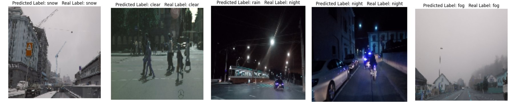
Test-set predictions. The third image is a miss: a night scene predicted as rain.
Pipeline
Images resized to 128×128, normalised to [0, 1], shuffled and one-hot encoded.
Model
Three convolution and max-pooling stages (32, 64, 128 filters), a 128-unit dense layer and a softmax output. Trained with Adam for 25 epochs.
Finding
Grayscale conversion and histogram equalisation lowered accuracy, likely because colour carries much of the weather information. The final model keeps full colour.